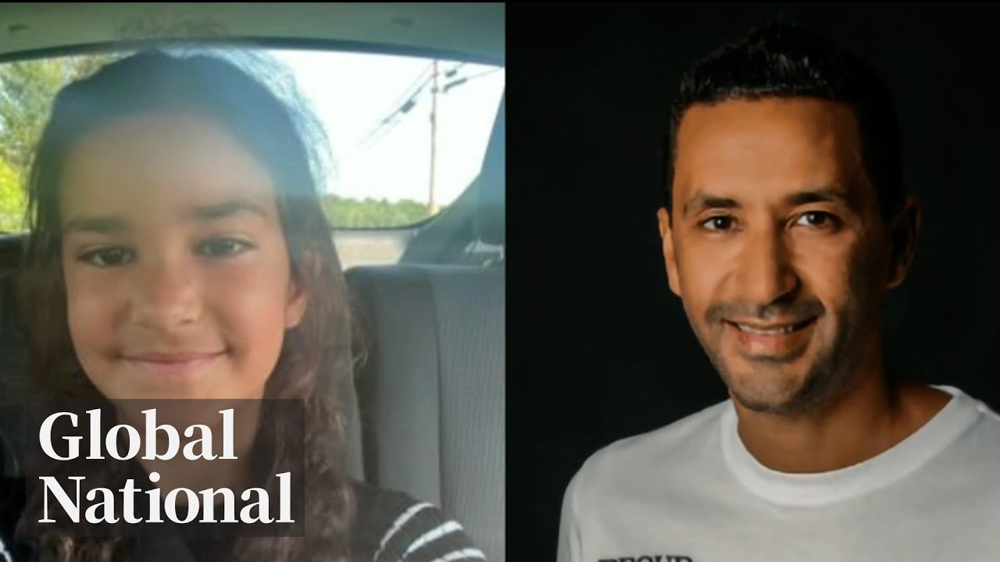

【加拿大新闻 Global News 20250722 一名蒙特利尔父亲被指控在纽约度假期间谋杀其9岁女儿｜因溺水风险，数十万泳池被召回】
Summary: A Montreal father is accused of murdering his 9-year-old daughter during a New York vacation after falsely reporting her abduction. A Canadian minister faces scrutiny for supporting a terrorist-linked immigrant. Thousands of pools are recalled due to drowning risks, while a Saskatchewan woman wins the Nelson Mandela Award for indigenous advocacy.
摘要： 一名蒙特利尔父亲被指控在纽约度假期间谋杀其9岁女儿，此前他谎报女儿遭绑架。一名加拿大部长因支持与恐怖组织有关联的移民面临质疑。因溺水风险，数十万泳池被召回，同时一名萨斯喀彻温省女性因原住民权益倡导获颁曼德拉奖。

⏱️ Estimated Reading Time: 31 min.
📚 四级生词 📚 六级生词 📚 雅思生词 📚 托福生词 📚 专八生词 📚 SAT生词 📚 考研生词 📚 GRE生词 📚 高考生词 📚 其它生词
On this Monday night, a Montreal father accused of a heinous crime, while he's charged in the murder of his nine-year-old daughter.
本周一晚间，一名蒙特利尔父亲被指控犯下滔天罪行——他因谋杀自己九岁的女儿被起诉。
You have anything to say about these charges?
对这些指控你有什么要说的吗？
What he told police and what's known about the girl's final days.
他向警方交代的内容及女孩生命最后时光的已知信息。
A federal cabinet minister's defense, while he says he supported the immigration application of a man who Canada deemed a member of a terrorist organization.
一名联邦内阁部长为自己辩护，他承认曾支持被加拿大列为恐怖组织成员的移民申请。
Potential danger.
潜在危险。
Why hundreds of thousands of swimming pools in Canada are being recalled.
为何加拿大数十万游泳池被紧急召回。
Plus, prestigious honor.
此外，一项崇高荣誉。
Couldn't believe that I was selected.
"我简直不敢相信自己会当选"。
The indigenous woman from Saskatchewan bestowed with a 2025 Nelson Mandela Award.
这位来自萨斯喀彻温的原住民女性被授予2025年纳尔逊·曼德拉奖。
Global National with Donna Friesenda reporting tonight, Carolyn Jarvis.
今晚环球新闻由唐娜·弗里森达报道，我是卡罗琳·贾维斯。
Good evening and thanks for joining us.
晚上好，感谢收看。
A Montreal businessman is facing charges of second-degree murder and concealment of a body after his nine-year-old daughter was found dead in the U.S.
一名蒙特利尔商人因九岁女儿在美国死亡，面临二级谋杀和藏尸指控。
The father was accused of killing her while on vacation in New York.
这名父亲被指控在纽约度假期间杀害女儿。
He initially told police she was abducted, but investigators say that was a lie.
他最初向警方报案称女儿遭绑架，但调查人员证实这是谎言。
Tariya Isri reports on what we know so far.
塔利亚·伊斯里将报道事件最新进展。
Mr. Pajol, do you have anything to say?
帕约尔先生，你有什么要说的吗？
Luciano for Tolen led away in handcuffs, accused of murdering his nine-year-old daughter Malina and trying to hide her body.
卢西亚诺·托伦戴着手铐被押走，他被指控谋杀九岁女儿玛琳娜并企图藏尸。
Members of the New York State Police Force Rangers located Malina deceased in the shallow portion of a pond.
纽约州警骑警队在池塘浅水区发现了玛琳娜的遗体。
The investigation began as a possible kidnapping.
本案最初是作为疑似绑架案展开调查。
An amber alert went out for a missing child around Lake George in the Adirondacks.
警方曾为阿迪朗达克山脉乔治湖地区一名失踪儿童发布安珀警报。
He then reports two unknown males forced her into a white van.
他随后报案称两名陌生男子将女儿强行拖入白色货车。
That lead was thoroughly investigated and disprovened.
该线索经彻底调查后被证实不实。
For Tolen had taken his daughter over the border on vacation.
托伦原本是带女儿跨境度假。
On July 11th, police say they entered the U.S. legally, visiting Connecticut and New York.
警方称他们于7月11日合法入境美国，先后到访康涅狄格州和纽约州。
On July 19th at 5.30 pm, Malina is seen with her father on video surveillance.
7月19日下午5点30分，监控拍到玛琳娜与父亲在一起的画面。
An hour later, she phones her mother and sounds fine.
一小时后，她与母亲通话时听起来一切正常。
At 10 pm, her father calls police and reports her disappearance around Lake George.
当晚10点，其父报警称女儿在乔治湖附近失踪。
Sometime in that three and a half hour span, investigators believe she was murdered.
调查人员认为她在这三个半小时内某时刻遇害。
At 10.50, Sunday, July 20th, New York State Forest Rangers find her body.
7月20日周日晚上10点50分，纽约州森林骑警队发现了她的遗体。
The same day, she was supposed to return home to her mother in Montreal.
当天本该是她返回蒙特利尔母亲身边的日子。
Investigators say her parents had been estranged since 2019, and that she lived with her mother full time.
调查人员称其父母自2019年起分居，她长期与母亲同住。
Their separation ended badly.
"他们的分离结局很糟糕"，托伦的朋友向TVA电视台透露。
This friend of for Tolen told TVA.
托伦的这位朋友告诉TVA电视台。
According to police, the 45-year-old has no criminal record or history of domestic abuse.
警方表示，这名45岁男子无犯罪记录或家暴史。
He owns a Montreal business known as Gambela Coffee, and describes himself as someone who spends as much time as he can in Montreal, Canada, with his beautiful daughter Malina, as the light of his life.
他在蒙特利尔经营"甘贝拉咖啡"公司，自称尽可能多陪伴女儿玛琳娜，称她是"生命之光"。
The Canadian authorities will help out in getting judicial authorizations, production orders, search warrants, items like that.
加拿大当局将协助获取司法授权、生产令、搜查令等文件。
Court documents point to financial trouble with Scotia Banks, suing him for $83,000.
法庭文件显示他与丰业银行存在财务纠纷，被追讨83,000加元。
He's now being held behind bars in Essex County, New York.
他目前被关押在纽约州埃塞克斯县监狱。
For Tolen, we'll be prosecuted for Malina's death in the US.
托伦将在美国就玛琳娜之死接受审判。
New York State police have yet to release the cause of death, but say it will come after an autopsy being performed today.
纽约州警方尚未公布死因，表示需等待今日完成的尸检报告。
Carolyn, Julia Isary in Montreal, thank you.
卡罗琳，蒙特利尔的朱莉娅·伊萨里报道。
And another summer tragedy, a 13-year-old Hamilton girl is dead after drowning at a popular camping and swimming spot in southwestern Ontario.
另一起夏季悲剧：安大略省西南部某热门露营游泳区发生溺水事件，一名13岁汉密尔顿女孩身亡。
It happened Sunday evening at the Wildwood Conservation Area.
事故发生于周日晚间的威尔德伍德保护区。
The girl was reportedly there with her family but disappeared in the water.
据报道女孩当时与家人同在保护区，后在水域失踪。
Police were called shortly before 7 p.m. and searched the reservoir.
警方于晚7点前接报并对水库展开搜索。
The teen's body was found about an hour later within a designated swimming area.
约一小时后，少女遗体在指定游泳区内被发现。
Public Safety Minister Gary Anandissangare says he was only doing his job and downplayed his involvement in a national security case about letters he wrote supporting the member of a terrorist group.
公共安全部长加里·阿南迪桑加里辩称自己仅履行职务，淡化其涉及国家安全案件的程度——他曾为恐怖组织成员撰写支持信。
A global news investigation uncovered that Anandissangare had asked Canadian officials to back the immigration bid of a man who was already deemed by Canada to be a member of the Tamil Tigers.
环球新闻调查显示，阿南迪桑加里曾要求加拿大官员支持一名被加国列为泰米尔猛虎组织成员的移民申请。
Just some will join us now with more.
杰夫将带来详细报道。
Jeff.
杰夫。
Carolyn, we spoke with Gary Anandissangare for the first time.
卡罗琳，我们首次专访了加里·阿南迪桑加里。
Since our investigation revealed that Canada's public safety minister had previously written letters of support for a suspected member of a terrorist organization to immigrate here to Canada.
此前本台调查披露这位公共安全部长曾为疑似恐怖组织成员撰写移民支持信。
Before he became public safety minister, Anandissangare wrote these two letters for a Sri Lankan citizen, Senfu Run, Subokomaran.
在就任现职前，阿南迪桑加里为斯里兰卡公民森富·伦·苏博科马兰写过两封支持信。
Subokomaran is married to a Canadian and he previously admitted to Canadian and British officials that he was a former member of the Tamil Tigers.
苏博科马兰与加拿大人结婚，曾向加英官员承认自己是泰米尔猛虎组织前成员。
In 2006, the Canadian government designated that militant group a terrorist organization.
2006年加拿大政府将该武装组织列为恐怖实体。
Now after his application was denied, Subokomaran changed his story and claimed he hadn't worked for the group and that he lied after receiving bad legal advice.
申请被拒后，苏博科马兰改口称从未为该组织工作，此前是因错误法律建议撒谎。
But immigration officials didn't buy it.
但移民官员未采信其说辞。
They rejected his claims four times.
他们先后四次驳回其主张。
Anandissangare told me that writing those letters was part of his responsibilities as an elected MP.
阿南迪桑加里向我表示，撰写这些信件是其当选议员职责所在。
This is part and parcel of the work that every member of parliament does.
"这是每位国会议员工作的基本组成部分"。
And in this particular case, I was executing my duties as a member of parliament one that I believe constituents expect me to do.
"在此特定案例中，我履行了选民期待的议员职责"。
He was rejected on national security grounds, though, which is quite extraordinary.
但以国家安全为由拒签实属罕见。
We couldn't find any other case like that.
我们未发现类似先例。
And now your minister in charge of national security, border security.
而您现在主掌国家安全与边境安全。
Do you defend that decision now?
您现在仍为当初决定辩护吗？
Do you regret writing those letters?
是否后悔撰写那些信件？
Just to be very clear, the ministry of relief regiment does contemplate advocacy by a range of individuals, including members of parliament.
"需要明确的是，移民制度本就考虑包括议员在内的多方 advocacy"。
In the context of minister that would be inappropriate and I have instructed my office not to issue support letters of that nature because ultimately the decision will be coming to me as an individual.
"作为部长继续此类操作就不恰当，我已要求办公室停止发放此类支持信，因为最终决定权将落在我个人身上"。
Anandissangare is most recent letter of support in 2023 was sent just one day before he joined cabinet.
阿南迪桑加里最近一封支持信写于2023年，恰在其入阁前一天发出。
Asked about this case last week, the prime minister said his public safety minister has been transparent and has his full confidence.
上周总理被问及此事时表示，公共安全部长保持透明并获其完全信任。
Carolyn?
卡罗琳？
Jeff Semple in Toronto, thank you.
多伦多的杰夫·森普尔报道。
For the first time, federal health minister Marjorie Michele responded to questions in person about the government's troubled vaccine injury support program.
联邦卫生部长玛乔丽·米歇尔首次就问题频出的疫苗伤害支持计划当面回应质询。
The government created the program in 2021 to provide financial support to anyone who is seriously and permanently injured by a vaccine and hired a private company called Oxaro to run it.
该计划设立于2021年，旨在为疫苗造成严重永久性伤害者提供经济支持，并外包给私营公司Oxaro运营。
But a global news investigation revealed of the $54 million in taxpayer dollars paid to Oxaro only a third.
但环球新闻调查显示，Oxaro获得的5400万加元纳税人资金中仅三分之一。
18 million reached the injured and more than 1,700 people are still waiting for their claims to be decided some for years.
1800万实际赔付给受害者，超1700人的索赔仍待裁定，部分已等待数年。
Today, the minister said that was unacceptable.
今日部长称这种情况不可接受。
No, people shouldn't wait if they really need services or to get compensation, but as I will tell you, it's more complex than theirs.
"是的，急需服务或补偿者不应久等，但实际情况比表象更复杂"。
When asked whether the government will renew its contract with Oxaro once it expires next year, the minister said for now a third party is running it, but every option is on the table.
被问及明年合同到期后是否续约时，部长表示目前由第三方运营，所有选项都在考虑中。
Oxaro, meanwhile, says it has received 10 times as many claims as anticipated and is working with a public health agency of Canada to handle the workload while respecting its budget.
Oxaro则称收到超预期十倍的索赔量，正与加拿大公共卫生局合作处理，同时遵守预算限制。
Canada's premieres are gathering in Hunts Philanterio today ahead of a meeting with Prime Minister Mark Carney.
加拿大各省省长今日齐聚亨茨维尔，准备与总理马克·卡尼会晤。
Once again, the economy and U.S. President Donald Trump's tariffs are at the top of the agenda, with more levees against Canadian goods expected in the coming weeks.
经济议题与美国总统特朗普的关税政策再次成为焦点，预计未来数周将对更多加国商品加征关税。
As McKenzie Gray reports, there are still differing views on how best to tackle the problem.
麦肯齐·格雷报道称，各方对最佳应对方案仍存分歧。
In Ontario, cottage country, a friendly welcome from the premier or talks turn to addressing a common threat.
在安大略省度假区，省长友好欢迎之余，话题转向共同威胁。
Donald Trump.
唐纳德·特朗普。
Start buying Canadian-made vehicles, start buying Canadian-made everything.
"开始购买加拿大制造的车辆，购买所有加拿大制造的产品"。
That will hurt more than anything at all, whether a number one customer.
"这比任何手段都更能刺痛我们头号客户"。
But Trump's administration isn't treating Canada like a top customer, promising a 35 percent tariff on all non-free trade goods starting August 1st.
但特朗普政府未将加拿大视作顶级客户，宣布自8月1日起对所有非自由贸易商品征收35%关税。
The reality that we won't get to zero on each and every topic.
"现实是我们无法在所有议题上都达成零关税"。
The goal is to get as close to zero on as many items that we possibly can.
"目标是在尽可能多的商品上接近零关税"。
Whatever the deal, the premier of Quebec wants long-term stability for struggling Canadian businesses.
无论达成何种协议，魁北克省长都希望为困境中的加国企业争取长期稳定。
We need to have if there's an agreement in August 1st, a duration, who it would be for three years, for five years.
"若8月1日达成协议，必须明确有效期——三年还是五年"。
Trump has reneged on multiple previous agreements, but Alberta's premier believes for Canada recent concessions like dumping the digital services tax will help.
特朗普曾多次撕毁协议，但阿尔伯塔省长认为加方近期让步（如取消数字服务税）将起积极作用。
So I think by making those kinds of concessions, it demonstrates good will.
"我认为这类让步展现了善意"。
And I think all of us are hopeful that we'll get to the agreement.
"大家都对达成协议抱有希望"。
To lessen dependence on the U.S. both Carney and the premieres have promised to build major infrastructure projects.
为降低对美依赖，卡尼与各省长承诺将推进重大基建项目。
But some indigenous leaders at Monday's meeting were frustrated with the talks.
但周一与会的一些原住民领袖对会谈感到失望。
Like they're pretty much set in their ways, and somehow we're supposed to believe in them, that things will be okay.
"他们固守己见，却要我们相信一切都会好起来"。
And we're saying, no, we don't believe in.
"而我们明确表示不相信"。
Others optimistic about charting a positive path forward.
也有人对规划积极前景持乐观态度。
Consider this progress.
"这已是进步"。
I'm glad that the premier has agreed that we do have to have tough discussions with each other.
"很高兴省长同意我们必须进行艰难对话"。
Discussions that will continue with Mark Carney when he arrives in Miss Goca late Monday.
相关讨论将在周一晚些时候卡尼抵达米萨加后继续。
In your place?
"由你接手？"
Yes, I heard of us.
"是的，我听说过我们"。
Your product.
"你们的产品"。
Yes, sir.
"是的，先生"。
I don't know, but I need anything.
"我不确定，但我需要一切帮助"。
Indigenous leaders were frustrated.
原住民领袖感到沮丧。
They weren't invited to that dinner, or Tuesday's meeting with the Prime Minister, Carolyn, leading them and the premieres to Colin Carney to have an additional meeting with them later this year.
他们未获邀参加当晚宴会及周二的总理会晤，卡罗琳，这促使他们与各省长要求今年晚些时候与卡尼额外会面。
Mackenzie Gray and Huntsville, Ontario, thank you.
感谢安大略省亨茨维尔的麦肯齐·格雷。
In Newfoundland and Labrador, firefighters are fending off a wildfire that's reached dangerously close to the town of Musgrave Harbor.
纽芬兰与拉布拉多省的消防员正在抵御一场逼近马斯格雷夫港镇的野火。
Officials say the fire has grown to 1800 hectares since it was detected Saturday night.
官方称自周六夜间发现以来火势已蔓延至1800公顷。
It's burning just two kilometers from the community which has been evacuated.
火场距已疏散的居民区仅两公里。
Fire crews are optimistic, though, that rainfall and changing winds in the forecast will help suppress the flames.
消防队预计降雨和风向变化将有助于控制火势。
Four water bombers are also attacking the blades from the air.
四架灭火飞机正从空中洒水作业。
The wildfire situation also remains tough across Manitoba.
马尼托巴省野火形势同样严峻。
In an update today, officials said nearly all fires increased in activity after a hot and dry weekend.
最新通报显示，经历干燥炎热周末后几乎所有火势加剧。
Despite more rain in the forecast, less than a millimeter has fallen on the worst hit areas in recent days.
尽管预报有雨，重灾区近日降水量不足1毫米。
Wildfire smoke is also reducing visibility for crews in the air.
野火烟雾导致空中作业能见度降低。
Air quality warnings are still in effect throughout much of the province and parts of neighboring Saskatchewan and Ontario.
该省大部及邻近萨斯喀彻温、安大略省部分地区仍维持空气质量警报。
More than five million above ground pools sold in Canada and the US are being recalled after several children drowned.
美加两国召回超500万地上泳池，涉及多起儿童溺亡事故。
The pool sold by Bestway, Intex, Recreation and Polygroup feature compression straps running along the exterior.
涉事品牌Bestway、Intex、Recreation和Polygroup的泳池外缘配有压缩绑带。
Health Canada and the US Consumer Product Safety Commission say children have used the straps as makeshift steps to enter pools unattended.
加拿大卫生部与美国消费品安全委员会称儿童曾利用绑带擅自进入泳池。
More than 260,000 have been sold in Canada.
加拿大境内已售出超26万套。
The pools are linked to the deaths of nine children in the US between 2007 and 2022.
2007至2022年间美国9名儿童死亡与这些泳池有关。
You can find more details of the recall on Health Canada's website.
召回详情可查阅加拿大卫生部官网。
Canada joins renewed calls to end the war in Gaza.
加拿大加入国际社会要求加沙停火的新呼吁。
Coming up, the plea from 25 countries to stop the suffering as Israel pushes on with its offensive.
25国联合呼吁制止以军攻势造成的人道灾难。
In Bangladesh, at least 19 people are dead and some 160 others injured, mostly students, after an Air Force training jet crashed into a college campus in the country's capital.
孟加拉国空军训练机坠毁首都校园，致至少19死160伤，多数为学生。
The jet suffered a technical malfunction shortly after takeoff according to the Bangladesh military.
孟加拉军方称飞机起飞后不久发生技术故障。
The pilot who was among the dead attempted to divert the aircraft away from densely populated areas.
遇难飞行员曾试图将飞机转向远离人口稠密区。
But despite his best efforts, the plane slammed into a two-story building, which is part of the Milestone School and College in Dacca.
尽管全力操控，飞机仍撞上达卡里程碑学校的二层建筑。
Canada and 24 other countries, excluding the US, issued a joint statement today demanding Israel end the war in Gaza.
加拿大与24国（不含美国）联合声明要求以色列终止加沙战争。
Part of the statement says the suffering of civilians in Gaza has reached new depths.
声明指出加沙平民苦难已达空前程度。
The letter also criticizes the Israeli and US-backed aid operation in Gaza.
声明谴责以色列与美国主导的加沙援助行动。
Israel's plan to create a so-called humanitarian city and Israeli settlement in the West Bank.
以及以方在约旦河西岸建立"人道主义城"与定居点的计划。
As Redmond Shannon reports, the joint statement came as Israel began a new ground offensive.
雷德蒙·香农报道，声明发布时以军正发动新地面攻势。
The start of a new phase of Israel's war in Gaza, the first ground assault on the central city of Dar al-Bala.
以军首次进攻加沙中部达尔巴拉市，标志战争进入新阶段。
On Sunday, thousands evacuated the area where many aid groups are based and where its believed Israeli hostages are being held.
周日数千人撤离该区域，当地既有援助组织据点也有以方人质关押点。
Until now, the operations that were geared towards the rest of the passengers were done in a very quiet manner.
此前针对其他乘客的行动都低调进行。
Now it's like this big announcement about the operation beginning.
如今却大张旗鼓宣布行动开始。
Evacuation notices tank-solving in, so it doesn't seem like something of this assault.
疏散通知密集发布，使此次进攻显得不同寻常。
The assault is also a day after dozens of people were killed trying to get aid.
进攻前日，数十名领取援助的平民遇难。
According to the Hamas-Ron Health Ministry, Israel's military says it fired warning shots to disperse a threat.
哈马斯卫生部称，以军表示开火是为驱散威胁。
On Monday, a group of 25 Western governments issued a joint demand to end the war, including Canada.
周一包括加拿大在内的25个西方国家政府联合要求停战。
It said we condemn the drip feeding of aid and the inhumane killing of civilians, including children.
声明谴责"点滴式"援助及针对儿童等平民的屠杀。
Adding that, Israel must comply with its obligations under international humanitarian law.
强调以色列必须遵守国际人道主义法义务。
The situation on the ground in Gaza is intolerable.
加沙地面局势已至不可容忍地步。
On so many levels.
从多方面而言皆是如此。
The countries also condemned Israeli plans to move the entire population of Gaza to a so-called humanitarian city planned for the runes of Rafa in the south of the strip.
多国谴责以色列计划将加沙民众迁至南部拉法废墟规划的"人道主义城"。
They also condemned Israeli settlements in the occupied West Bank.
并谴责以方在约旦河西岸扩建定居点。
And until now we see very little concrete activism by such countries falling up in such statements.
迄今未见这些国家在声明后采取具体行动。
Israel says the joint statement is, quote, disconnected from reality and that it fails to focus on Hamas's role in the war.
以色列称联合声明"脱离现实"，未聚焦哈马斯战争责任。
Two notable absentees from the statement are Israel's two biggest military suppliers and diplomatic allies, the United States and Germany.
未参与声明的两个重要国家是以色列主要军援与外交盟友——美国和德国。
Carolyn?
卡罗琳？
Redmond Shannon in London, thank you.
伦敦的雷德蒙·香农，谢谢。
In Syria, a fragile ceasefire appears to be holding after days of sectarian violence that left hundreds dead and displaced hundreds more.
叙利亚宗派冲突致数百死伤后，脆弱停火协议暂时维持。
Bedwin militia were seen leaving the city of Sueda in cars and on the backs of trucks after a week of kidnappings and clashes with fighters from the Drew's minority.
贝都因民兵乘车辆撤离苏韦达市，结束与德鲁兹少数族群武装一周的绑架冲突。
Syria's fledgling government deployed its forces at entry points around the predominantly Drew's city Sunday restoring calm.
叙利亚过渡政府周日在该德鲁兹人为主的城市入口部署部队恢复秩序。
Morning, a popular 80s sitcom star.
早安，80年代热门情景喜剧明星。
Ahead, what police are saying about the death of Malcolm Jamal Warner.
接下来警方对马尔科姆-贾马尔·华纳死因的说明。
Just think that I was that close to what the most embarrassing days of my life.
回想那几乎成为我人生最尴尬的时刻。
That's after Malcolm Jamal Warner, best known for his role as Theo Huxedible on the popular sitcom The Cosby Show.
马尔科姆-贾马尔·华纳因出演《考斯比一家》中西奥·赫克斯特布尔一角闻名。
Warner died while on a trip to Costa Rica.
华纳在哥斯达黎加旅行期间身亡。
Investigators say he accidentally drowned when a current pulled him deeper into the ocean Sunday afternoon.
调查称周日下午他被洋流卷入深海导致意外溺亡。
Warner performed in many hit TV comedies and dramas, including Malcolm and Eddie, suit and sons of anarchy.
华纳曾出演《马尔科姆与艾迪》《金装律师》等多部热门剧集。
He was 54 years old.
终年54岁。
U.S. President Donald Trump is now marking six months into his second term in office and with everything from terror threats to mass deportations, it's definitely been a busy time of enacting aggressive and divisive policies.
美国总统特朗普执政半年，从反恐到大规模驱逐推行激进政策。
As Jackson Prasco reports, there are signs the American people are already growing weary of it.
杰克逊·普拉斯科报道显示美国民众已现疲态。
So, help me, God, congratulations, Mr.
"愿上帝保佑，恭喜，先生。"
There were early signals this second Trump term would be different.
早有迹象表明特朗普第二任期将不同。
Day one brought a flurry of executive orders and pardons, then came mass firings of federal workers.
首日即签署多项行政令与赦免令，随后大规模解雇联邦雇员。
Deportations and threats to annex Canada soon followed.
驱逐移民与吞并加拿大的威胁接踵而至。
So I think Canada is going to be a very serious contender to be our 51st day.
"我认为加拿大将成为第51州的强力竞争者。"
Six months in, Trump claims it's all being hailed as one of the most consequential periods of any president.
特朗普宣称这半年是历任总统最具影响力的任期阶段。
He's not wrong.
此言非虚。
I don't think anybody can deny that Trump hasn't worked hard and gotten a lot done.
"无人能否认特朗普的勤政成效。"
Now, what he's done, of course, pleases conservatives for the most part and has horrified moderates and liberals.
其政策主要取悦保守派，震惊温和派与自由派。
But the honeymoon may already be over.
但蜜月期恐已结束。
Trump's overall approval rating has slipped to 42 percent down 10 points since February.
特朗普支持率降至42%，较二月下降10%。
On immigration, his top issue, more now, oppose what Trump is doing than support it.
在移民核心议题上，反对者已超支持者。
When you look at his specific performance on immigration, he's sort of in negative waters.
"其移民政策表现已陷入负面评价。"
He's in the 30s, which isn't great.
支持率30%区间实属不佳。
It's a problematic place to be.
处境堪忧。
The next six months may prove to be the bigger test with his base fractured by Trump's handling of the investigation into sex offender Jeffrey Epstein.
未来半年面临更大考验，基础盘因爱泼斯坦性侵案调查分裂。
While the impact of Trump's tariffs is only now starting to take hold on the US economy.
关税政策对美国经济的影响方才显现。
It really will be the second half of this year that will tell all and show to what extent will the tariff policy come back and affect him negatively or positively.
"下半年将揭示关税政策对其执政的利弊影响。"
Far from deterred, Trump keeps unleashing a torrent of daily pronouncements.
特朗普仍每日发布大量声明。
His latest demanding sports teams in Washington and Cleveland revert to names and logos that were long ago deemed racist.
最新要求华盛顿与克利夫兰球队恢复曾被视作种族歧视的旧队徽。
I think you've seen the president gets involved in a lot of things that most presidents have not.
"总统插手了许多前任未涉足的领域。"
He's a non-traditional president.
他是非传统型总统。
There's rarely a day where Trump isn't making headlines.
特朗普几乎每日占据头条。
Americans have learned their president likely wouldn't have it any other way.
美国民众已习惯其行事风格。
Jackson Prasco Global News, Washington.
杰克逊·普拉斯科，全球新闻华盛顿报道。
An international human rights honor awarded to a Saskatchewan woman.
萨斯喀彻温省女性获国际人权奖项。
Next, her critical work in helping indigenous communities.
接下来报道她助力原住民社区的重要工作。
A Saskatchewan woman has received a rare honor for her dedication in advancing indigenous rights, mental health and trauma-informed care.
萨斯喀彻温省女性因推动原住民权利与创伤疗护获罕见荣誉。
The Nelson Mandela prize is only awarded every five years on the birthday of the former South African leader.
曼德拉奖每五年在前南非领袖诞辰日颁发。
It's given to those who have dedicated their lives to the service of humanity, reconciliation and community development.
授予终身奉献于人道主义、和解与社区发展的人士。
As Melissa Ridge reports, this is the first time it's been awarded to a Canadian.
梅丽莎·里奇报道，此为该奖首次授予加拿大人。
I call to order the informal meeting of the plenary to observe the Nelson Mandela International Day.
"我宣布曼德拉国际日非正式全会开始。"
The UN headquarters in New York is a long way from fishing lake first nation in Saskatchewan.
纽约联合国总部距萨斯喀彻温省钓鱼湖原住民区千里之遥。
The journey of a lifetime for Brenda Reynolds, one of just two people in the world, with the 2025 Nelson Mandela Award.
布伦达·雷诺兹获2025年曼德拉奖，全球仅两人得此殊荣。
Even though I speak two languages, I still cannot find the words to express the depth of my gratitude and the humility I have to accept the United Nations Nelson Mandela prize.
"尽管掌握两种语言，仍难表达接受联合国曼德拉奖的感激与谦卑。"
Reynolds supported 17 teenage girls who came forward with Saskatchewan's first residential school sex abuse case in 1988 and more recently served as special advisor to the truth and reconciliation commission.
雷诺兹曾支持1988年萨省寄宿学校性侵案17名少女，后任真相与和解委员会顾问。
She's a social worker who turned a struggle against the most ideas of crimes against children into a national force for change, supporting and developing trauma responses for survivors and families at the residential school system.
这位社会工作者将反儿童犯罪斗争发展为全国变革力量，为寄宿学校幸存者家庭建立创伤应对机制。
This so-toe matriarch has long felt a kinship with the South African anti-apartheid activist and politician.
这位索托族长老始终认同南非反种族隔离领袖的理念。
There are many parallels to what we had experienced in both our countries where the governments made impacted policies to change who we are, to face oppression, to face a violation of human rights in our countries.
"两国都经历政府政策压迫与人权侵害。"
More than 300 people were nominated for the honor awarded to one man and one woman every five years.
该奖项每五年评选男女各一人，本届超300人获提名。
I want to keep on doing my consulting work.
"我将继续咨询工作。"
I love doing the education, talking about what are the traumatic events, cause that are caused by cultural genocide.
"致力于教育公众认识文化灭绝导致的创伤。"
What does it look like and what does it look like today?
"解析历史创伤与当代影响。"
Melissa Rigen, Global News, Winnipeg.
梅丽莎·里根，全球新闻温尼伯报道。
And that is Global National for this Monday night.
以上就是本周一晚间的《全球聚焦》。
I'm Carolyn Jarvis.
我是卡罗琳·贾维斯。
Tonight's your Canada Show cases can fill Nova Scotia, Mrs. Saga Ontario and a patriotic Moose Law Enormon in Hope, British Columbia.
今晚《加拿大概览》将呈现新斯科舍省、安大略省萨加女士与BC省霍普市爱国驼鹿。
Please keep sending your pictures of Canadian pry to GlobalNational at GlobalNews.ca.
欢迎继续向GlobalNational@GlobalNews.ca投稿加拿大风情照片。
Thanks for watching.
感谢收看。
Hope you'll join us again tomorrow.
明日再见。
Have a great night.
晚安。